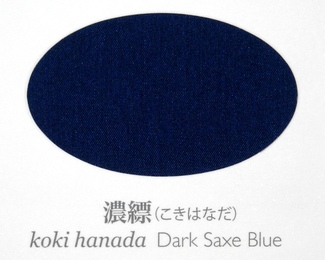

ni'o ni'o
lo poi lo no'u la .ki,iomiz. malsi cu se klama ke'a ku'o ninmu cu tavla fi lo se zungi be ko'a
ni'o
sei sa'a ze'i smaji se'u
le blanrkonu to'i sa'a lo blanrkonu cu xekri se mau lo blanrxanada

.i sitna la'o py 太田 耕嗣 『源氏物語 千年の色: 単色』, 太田工芸, 京都, 2005 py toi [blanrkonu] crekrsuikanu to'i sa'a lo crekrsuikanu cu creka se ku'u lo gugdejupu be ca lo no'u la .xeian. cedra be co'i li ze so vo bi'o pa pa so re

.i sitna la'o py 池上 良太 『図解 日本の装束』, 新紀元社, 東京, 2008 py toi [crekrsuikanu] dasni nanmu goi ko'a
noi ba'o bai gletu mi ku'o
ca'o lo nu viska le mi spenau goi ko'e poi skori rinju
pu ki cmila te tai lo si'o ckasu
.i
.ei ko'e la'u li xo pau nai cu xenru
.i ku'i
se gu so'i za'u mei troci lo nu tolcando
gi po'o lo skori linji cu za'u mei tai'i to'i sa'a zo tai'i po'e la'o gy COI2 gy cipra cmavo gi'e tcita lo cmevla ja se sitna be se pi'o zo zoi ja ve skicu le du'u sinxa le du'u ma kau sance pe'a lo tcini ja fasnu toi [tai'i] xic.xic. danre tunta
.i
mi sei rarna mo'i fa'a ko'e bajra se tai lo gunro
.i na'i
go'i .ai
.i ku'i
ko'a zi mo'i ni'a tikpa je falgau mi
.i
ca sa'e lo mu'e go'i ku
mi co'a sanji lo nu ne'i lo kanla be ko'e lo carmi poi no da ka'e ve skicu ke'a xabju pe'a
.i
no da ka'e ve skicu
.i
sei sa'a ze'i smaji se'u
mi bai lo ka morji tu'a le kanla kei
nau ca ji'a sai co'a se xadni co slilu
.i
ko'e poi le ke'a moklu do'a nai ba'e no valsi ka'e jai se pi'o bacru ku'o
tavla fi pi ro cinmo zu'i pe ne'i lo zi kanla
.i ku'i
lo va carmi cu na'e ka fengu kei je na'e ka badri kei
sei sa'a ze'i smaji se'u
je po'o je'a lenku bo gusni vau ju'a
.i
ri'a lo nu genai se tikpa ko'a gi se darxi pe'a le kanla skari kei
mi krixa po'o da sei mi na jimpe
.i ce'o ro mai de'a sanji
{kind=link}
ni'o ba za ku du'e re'u di'a sanji
.i je za'a
ko'a pe lo blanrkonu crekrsuikanu ba'o cliva co klama da
.i
lo se cliva zo'u nu po'o bu'u lo ckunrsugi to'i sa'a lo ckunrsugi cu du la'o ly Cryptomeria japonica ly toi [ckunrsugi] genja jibni ko'e skori rinju
.i
mi ba'o a'i zei rajgau lo mi xadni bu'u lo spatrtake to'i sa'a lo spatrtake cu du la'o ly Arundinarieae ly noi tricu me la'o ly Bambusoideae ly gi'e xabju lo glare milxe foldi
sei tu'a la'o ly Arundinarieae ly bu'u la'o zoi Non-monophyly of the woody bamboos (Bambuseae; Poaceae): a multi-gene region phylogenetic analysis of Bambusoideae s.s.
Sarawood Sungkaew, Chris M. A. Stapleton, Nicolas Salamin and Trevor R. Hodkinson
Journal of Plant Research, 2009, Volume 122, Number 1, Pages 95-108 zoi se cusku toi
[spatrtake] farlu bo pezli cpana
gi'e zgana ko'e sedi'o lo flira
.i ku'i
lo ko'e kanla skari cu ba'e no mei frica zu'i pe pu za
.i
ru'i ku bu'u lo lenku to'e sinma loldi lo ka xebni skari cu se jarco
.i
zo ckeji zo badri zo fengu
sei sa'a ze'i smaji se'u
.i
nau na djuno lo du'u lo za se cinmo be mi cu .ei se jufra ma kau
.i
mi tai'i .ioro,ior. co'a ruble sanli gi'e klama mo'i fa'a ko'e
.i lu
doi
.i
va'o lo nu ca ba'o co'e
na ka'e kansa ga'i nai do
.i
mi .u'o zi co'a morsi .ai sai
.i ku'i
sei sa'a ze'i smaji se'u
ku'i ko ji'a co'a morsi ga'i nai .e'o
.i
do viska ga'i nai lo se ckeji be mi
.i
mi na zanru lo nu cliva do po'o noi pa mei
li'u
ni'o
mi .a'i sai cusku di'u po'o
.i ku'i
ko'e noi za'a to'e jundi ku'o catlu po'o ju'a mi
.i
mi joi gi se rinju lo cutne poi pu'o spoja
gi sisku tu'a lo barda dakfu po ko'e
.i ku'i
sei la'a ko'a poi zekri lebna ba'o lebna .oi
lo barda dakfu po'o nai .e ji'a sai lo bagyce'a jo'u celga'a cu na'e se tolcri ne'i lo spati denmi
.i ku'i va'u lo nu nei ku
lo cmalu dakfu po'o ca'o vreta ne'a lo mi jamfu
.i
mi sei fe le cmalu dakfu mo'i ga'u jgari
za'u re'u cusku di'e ko'e
.i lu
ju'a ko te lebna lo ga'i nai nu jmive
.i
mi ji'a ba zi co'e li'e do
li'u
ni'o
ko'e ca lo mu'e tirna di'u ku du'e re'u jai gau tolcando fai lo ctebi
.i
ri'a .ei lo nu lo moklu cu culno lo spatrsasa to'i sa'a lo spatrsasa cu du la'o ly Sasa ly noi ke'a se jutsi fi la'o ly Bambusoideae ly zi'e poi lo stani be ke'a ru'i se vasru lo pilka .i lo spatrsasa lo spatrtake cu frica lo se jutsi gi'e ku'i simsa lo tarmi .i se ki'u bo lo nu da jutsi ma kau cu so'o roi se srera toi
[spatrsasa] farlu bo pezli kei
lo voksa la'u li no cu se tirna
.i ku'i
mi ba zi lo nu viska lo zu'o go'e cu jimpe fi le valsi
.i ko'e za'o to'e sinma mi
gi'e cusku lu ko catra li'u noi pa mei se bacru
.i
mi noi pi so'a mei senva joi cikna ku'o
sa'ei to'i sa'a zo sa'ei po'e la'o gy COI2 gy cipra cmavo gi'e tcita lo cmevla ja se sitna be se pi'o zo zoi ja ve skicu le du'u sinxa le du'u ma kau sance toi [sa'ei] .zbur. jai gau ke tunta je pagre fai lo cmalu dakfu lo po'e ko'e blanrxanada to'i sa'a lo blanrxanada cu skari tai lo'e xrula be la'o ly Commelina communis ly

.i sitna la'o py 太田 耕嗣 『源氏物語 千年の色: 単色』, 太田工芸, 京都, 2005 py toi [blanrxanada] crekrsuikanu cutne
ni'o
pe'i mi ca ji'a lo nu go'i ku de'a sanji
.i
ca lo mu'e du'e re'u viska lo vanbi kei
ko'e pu za co'u vasxu va'o lo za'i skori rinju
.i
le pilda to'i sa'a zo pilda nalmorsi gismu gi'e se smuni lo za'i lo flira cu ciblu claxu skari toi [pilda] flira ni'a se cpana lo stici solgu'i to'o lo spatrtake joi ckunrsugi denmi tsani
.i
mi joi gi jai gau rinju fai lo klaku voksa
gi jai gau to'e rinju je vikmi lo morsi xadni skori
.i ce'o
sei sa'a ze'i smaji se'u
.i ce'o mi mo
.i
lo nu go'i po'o zo'u mi claxu lo bapli ji'a be lo nu cusku
.i
ru'a mi ro roi claxu lo bapli be lo nu .uo co'a morsi
.i
lo nu lo cmalu dakfu gau tunta fa'a lo galxe
.e lo nu xadni plipe mo'i ne'i lo cmana jamfu cmala'u
.e mu'a nai lo vrici drata ji'a
cu te troci
.i ku'i
mi go co'a na je pu'o morsi gi'e me ti jmive
gi .ei to'e jgira lo nu go'i
sei sa'a jikseicni cisma
.i
lo cinmo ruble no'u mi zo'u
la'a lo prami je kecti mutce censa po'u la .kanzeon. ji'a co'u sidju pacna
.i ku'i
mi poi catra ko'e ku'o
mi poi .oi bai se gletu lo zekri lebna zo'u
pau sai mo .ei
.i pau sai mi
sei sa'a ze'i smaji se'u
mi
sei sa'a ze'i smaji se'u
sei sa'a suksa je carmi ke klaku sance